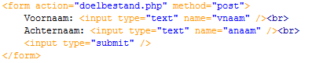
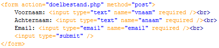

Formulieren zijn sterk verbeterd in HTML5. Er zijn vooral een hoop nieuwe input types bij gekomen welke het invoeren van formulieren makkelijker en duidelijker maken. Er is echter wel een groot nadeel. Nog lang niet alle browsers ondersteunen alle onderdelen. Op het moment dat een browser het precieze element niet ondersteund, wordt het input veld als een normaal tekstveld beschouwd.
Forms
| Voorbeeld 9-1 |
|  |
Het voorbeeld hierboven is een voorbeeld van een standaard formulier. Met een formulier kan de gebruiker gegevens invullen. Deze worden dan naar een opgegeven pagina gestuurd. Dat versturen gaat via de webserver. Om dit te laten werken moet je de bestanden dus testen op een webserver. Dat gaan we tijdens deze les niet doen. Het gaat er hier enkel om welke nieuw type invoervelden er zijn.
In het voorbeeld is de input type text. Dit levert een gewoon simpel tekstveld op waar de gebruike r iets kan invullen.
| Opdracht 1: testen |
Open een nieuw HTML5 bestand
|
Zoals gezegd zijn er een hoop nieuwe elementen bijgekomen maar worden deze nog lang niet door elke webbrowser ondersteund. Hieronder een overzicht.
| Property | |||||
|---|---|---|---|---|---|
| Color | NO | YES | NO | NO | YES |
| Date | NO | YES | NO | NO | YES |
| Datetime-local | NO | YES | NO | NO | YES |
| YES | YES | YES | YES | YES | |
| File | YES | YES | YES | YES | YES |
| Number | YES | YES | YES | YES | YES |
| Range | YES | YES | YES | YES | YES |
| required | YES | YES | YES | NO | YES |
| Opdracht 2: controleren |
| Open de site http://www.html5test.com. Je ziet de vijf webbrowsers naast elkaar. Controleer of de laatste versies van alle webbrowsers ingesteld staan. Check daarna of de lijst hierboven nog klopt. |
Color
Input type color geeft de mogelijkheid om een kleur te kiezen uit een aantal voorbeelden.
| Opdracht 3: color |
Open een nieuw HTML5 bestand
|
Date
Met de date krijg je een kalender te zien waar je vervolgens netjes de datum kunt selecteren. Dit kan erg handig zijn als je een bestelformulier maakt waarbij een datum moet worden opgegeven (denk aan een reis). Je weet zeker dat de gebruiker het juiste datumformaat heeft ingevuld.
| Opdracht 4: date |
Open het bestand opdracht9-3.html
|
Datetime-local
Met de datetime kan je zowel de datum als de tijd doorgeven. Het nadeel hiervan is dat het in Safari heel omslachtig werkt. Je moet namelijk per minuut doorklikken. In Opera werkt de functie perfect.
| Opdracht 5: datetime-local |
Open het bestand opdracht9-4.html
|
Email controleert of er in de ingevoerde waarde een @ vermeld staat. Zo niet, dan wordt er een standaard foutmelding terug gegeven. Het nadeel is dat de foutmelding die gegeven wordt, niet aan te passen is.
| Opdracht 6: email |
Open het bestand opdracht9-5.html
Sla het bestand op als opdracht9-6.html |
File
Met file kan je een makkelijke manier van bestandupload toevoegen. Hierbij moet je wel rekening houden dat dit nog geen bestanden online zet. Je krijgt de standaard wizard te zien om een bestand te selecteren.
| Opdracht 7: File |
Open het bestand opdracht9-6.html
|
Number
Met number kan je controleren of het een getal is binnen een door jezelf opgegeven reeks. Hierbij moet je twee extra attributen toevoegen aan <input>. Namelijk de min=”1” en max=”10”. De waardes kun je uiteraard zelf bepalen.
Nadeel is dat de foutafhandeling niet altijd correct is. Zo is het bij Safari mogelijk om waardes buiten het bereik of tekst in te voeren. Opera heeft het wel goed afgehandeld maar ook tekst kan worden ingevoerd.
| Opdracht 8: Number |
Open het bestand opdracht9-7.html
|
Range
Een range lijkt op number met het verschil dat je bij een range niet een tekstveld krijgt waarin je een getal typt of selecteert maar een slider welke je instelt op een bepaald getal.
Nadeel is dat de slider niet altijd duidelijk is.
| Opdracht 9: Range |
Open het bestand opdracht9-8.html
|
required
Required is niet een input type maar een attribuut die je aan elke bovenstaande input type kan koppelen. De velden waar dit bij staat, moeten verplicht ingevuld zijn, voordat het formulier verzonden kan worden. Het enige wat je moet doen is het woord “required” aan de input regel toevoegen.
| Voorbeeld 9-2 |
|  |
| Opdracht 10: required |
Open het bestand opdracht9-1.html
|